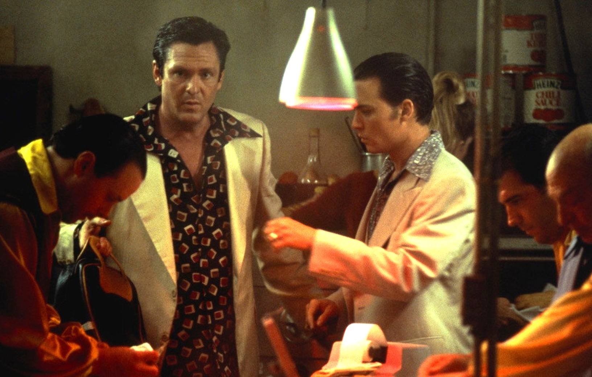

<div style="position: relative; width: 816px; height: 1056px; overflow: hidden; background: #18110f"><div style="position: absolute; left: 0; top: 300px; width: 816px; height: 222px; background: linear-gradient(to bottom, rgba(24,17,15,0) 0%, rgba(24,17,15,0.82) 52%, #18110f 100%)"></div><div style="position: absolute; left: 0; top: 0; width: 816px; height: 120px; background: linear-gradient(to bottom, rgba(24,17,15,0.7) 0%, rgba(24,17,15,0) 100%)"></div><div style="position: absolute; left: 20px; top: 20px; width: 776px; height: 1016px; box-sizing: border-box; border: 2px solid #e9b4ae"></div><div style="position: absolute; left: 27px; top: 27px; width: 762px; height: 1002px; box-sizing: border-box; border: 1px solid #e9b4ae; opacity: 0.6"></div><div style="position: absolute; left: 52px; top: 52px"><div style="font-family: 'Spectral', serif; font-weight: 700; font-size: 18px; letter-spacing: 0.24em; color: #f1e6d0; text-transform: uppercase; line-height: 1.2;">Japanese restaurant</div></div><div style="position: absolute; left: 40px; top: 404px; width: 736px"><div style="font-family: 'Shojumaru', serif; font-size: 64px; line-height: 1.0; color: #f1e6d0; white-space: nowrap">SAKURA GARDENS</div><div style="display: flex; align-items: center; gap: 14px; margin-top: 12px"><div style="width: 70px; height: 4px; background: #b3342a"></div><div style="font-family: 'Spectral', serif; font-style: italic; font-size: 19px; line-height: 1.25; color: #e9b4ae">The social club down the block. Their party of five eats with us Saturdays.</div></div></div><div style="position: absolute; left: 40px; top: 548px; width: 736px; height: 214px; box-sizing: border-box; border: 2px solid #f1e6d0; padding: 16px 20px 0"><div style="font-family: 'Spectral', serif; font-weight: 700; font-size: 17px; letter-spacing: 0.24em; color: #e9b4ae; text-transform: uppercase; line-height: 1.2;">House rule, tatami room</div><div style="font-family: 'Shojumaru', serif; font-size: 46px; line-height: 1.05; color: #f1e6d0; margin-top: 8px">PLEASE REMOVE<br>YOUR SHOES</div><div style="font-family: 'Spectral', serif; font-size: 20px; line-height: 1.25; color: #f1e6d0; margin-top: 8px; width: 400px">Slippers at the step. No exceptions.</div><div style="position: absolute; left: 510px; top: 26px; transform: rotate(-9deg); border: 5px solid #b3342a; padding: 6px 14px 2px; font-family: 'Shojumaru', serif; font-size: 33px; line-height: 1.05; color: #b3342a; text-align: center; background: rgba(24,17,15,0.6)">BOOTS<br>STAY ON</div></div><div style="position: absolute; left: 474px; top: 708px; width: 296px; height: 150px; background: #e8d3a6; box-shadow: 0 4px 12px rgba(0,0,0,0.55); transform: rotate(-5deg); box-sizing: border-box; padding: 10px 14px 0 16px"><div style="position: absolute; right: 14px; top: 12px; width: 14px; height: 14px; border-radius: 50%; background: #18110f"></div><div style="font-family: 'Spectral', serif; font-weight: 700; font-size: 15px; letter-spacing: 0.22em; color: #22140f; line-height: 1">SHOE CHECK</div><div style="font-family: 'Shojumaru', serif; font-size: 44px; line-height: 1.05; color: #22140f; margin-top: 4px">No. 5</div><div style="font-family: 'Spectral', serif; font-size: 14px; line-height: 1.2; color: #22140f">Present this ticket for your shoes.</div><div style="position: absolute; left: 46px; top: 106px; transform: rotate(-6deg); border: 3px solid #b3342a; padding: 3px 9px 1px; font-family: 'Spectral', serif; font-weight: 700; font-size: 22px; letter-spacing: 0.08em; color: #b3342a; line-height: 1.1; white-space: nowrap; background: rgba(232,211,166,0.35)">NEVER CLAIMED</div></div><div style="position: absolute; left: 40px; top: 800px; width: 400px"><div style="display: flex; align-items: stretch; width: 400px; height: 50px"><div style="width: 14px; background: #22140f"></div><div style="flex: 1; background: #b3342a; display: flex; align-items: center; justify-content: space-between; padding: 0 14px 0 14px"><span style="font-family: 'Shojumaru', serif; font-size: 40px; line-height: 1; color: #f1e6d0; margin-top: 2px; white-space: nowrap">THE BAR</span><span style="font-family: 'Spectral', serif; font-weight: 700; font-size: 16px; letter-spacing: 0.2em; color: #f1e6d0; text-transform: uppercase; white-space: nowrap">nightly</span></div></div><div style="margin-top: 10px"><div style="display: flex; justify-content: space-between; align-items: baseline; gap: 12px; font-family: 'Spectral', serif; font-weight: 700; font-size: 27px; line-height: 1.12; color: #f1e6d0"><span>Social Club Rob Roy</span><span style="color: #e9b4ae; white-space: nowrap">2.75</span></div><div style="font-family: 'Spectral', serif; font-size: 19px; line-height: 1.24; color: #f1e6d0; margin-top: 3px; opacity: 0.92">Scotch, sweet vermouth and bitters over one big cube, orange peel, a cherry.</div></div><div style="margin-top: 12px"><div style="display: flex; justify-content: space-between; align-items: baseline; gap: 12px; font-family: 'Spectral', serif; font-weight: 700; font-size: 27px; line-height: 1.12; color: #f1e6d0"><span>Hot Sake</span><span style="color: #e9b4ae; white-space: nowrap">1.50</span></div><div style="font-family: 'Spectral', serif; font-size: 19px; line-height: 1.24; color: #f1e6d0; margin-top: 3px; opacity: 0.92">Warm, in a stone carafe.</div></div></div><div style="position: absolute; left: 470px; top: 884px; width: 306px"><div style="margin-top: 0px"><div style="display: flex; justify-content: space-between; align-items: baseline; gap: 12px; font-family: 'Spectral', serif; font-weight: 700; font-size: 27px; line-height: 1.12; color: #f1e6d0"><span>Plum Wine</span><span style="color: #e9b4ae; white-space: nowrap">1.50</span></div><div style="font-family: 'Spectral', serif; font-size: 19px; line-height: 1.24; color: #f1e6d0; margin-top: 3px; opacity: 0.92">Sweet and cold, over ice.</div></div><div style="font-family: 'Spectral', serif; font-size: 16px; line-height: 1.25; color: #e9b4ae; margin-top: 18px">Prices subject to change. Spring 1978.<br>Not responsible for items in footwear.</div></div></div>